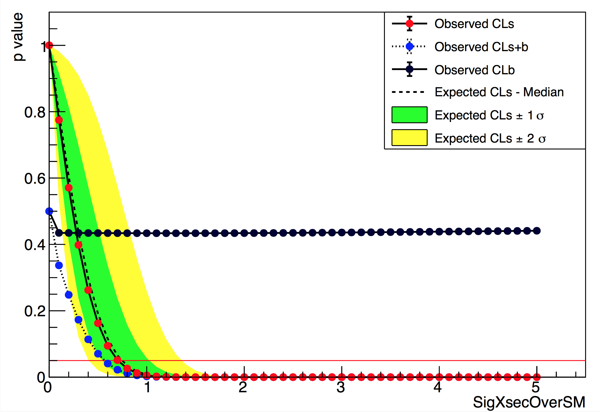
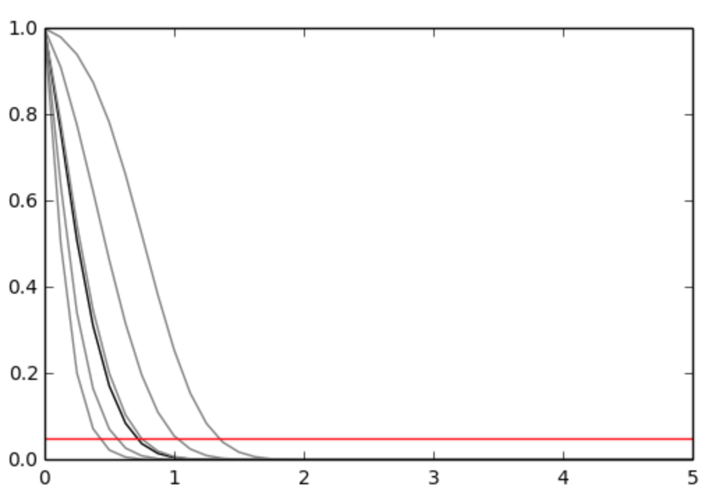

pure-python fitting/limit-setting/interval estimation HistFactory-style¶


The HistFactory p.d.f. template [CERN-OPEN-2012-016] is per-se independent of its implementation in ROOT and sometimes, it’s useful to be able to run statistical analysis outside of ROOT, RooFit, RooStats framework.
This repo is a pure-python implementation of that statistical model for multi-bin histogram-based analysis and its interval estimation is based on the asymptotic formulas of “Asymptotic formulae for likelihood-based tests of new physics” [arxiv:1007.1727]. The aim is also to support modern computational graph libraries such as PyTorch and TensorFlow in order to make use of features such as autodifferentiation and GPU acceleration.
Hello World¶
>>> import pyhf
>>> import pyhf.simplemodels
>>> import pyhf.utils
>>> pdf = pyhf.simplemodels.hepdata_like(signal_data=[12.,11.], bkg_data=[50.,52.], bkg_uncerts=[3.,7.])
>>> *_, CLs_obs,CLs_exp = pyhf.utils.runOnePoint(1.0, [51, 48] + pdf.config.auxdata, pdf)
>>> print('Observed: {} Expected: {}'.format(CLs_obs, CLs_exp[2]))
Observed: [0.05290116] Expected: [0.06445521]
What does it support¶
Implemented variations:
- [x] HistoSys
- [x] OverallSys
- [x] ShapeSys
- [x] NormFactor
- [x] Multiple Channels
- [x] Import from XML + ROOT via uproot
- [x] ShapeFactor
- [x] StatError
Computational Backends:
- [x] NumPy
- [x] PyTorch
- [x] TensorFlow
- [x] MXNet
Available Optimizers
Todo¶
- [ ] Lumi Uncertainty
- [ ] StatConfig
- [ ] Non-asymptotic calculators
results obtained from this package are validated against output computed from HistFactory workspaces

A two bin example¶
bin 1: nobs = 100, b = 100, db = 15., nom_sig = 30.
bin 2: nobs = 145, b = 150, db = 20., nom_sig = 45.
 
Installation¶
To install pyhf from PyPI with the NumPy backend run
pip install pyhf
and to install pyhf with additional backends run
pip install pyhf[tensorflow,torch,mxnet]
or a subset of the options.
To uninstall run
pip uninstall pyhf
Authors¶
Please check the contribution statistics for a list of contributors